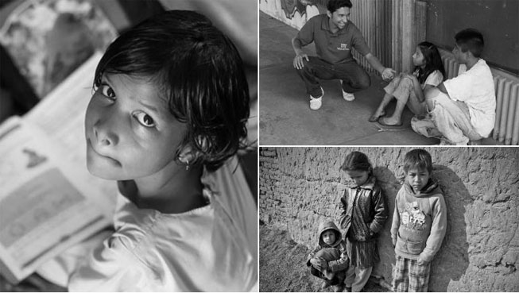

您的每一笔出借，都能为身处困境的孩子点亮一盏希望的明灯。
5月1日-5月31日，出借人在中投摩根每完成一笔出借，中投摩根都将用平台自有资金向腾讯公益“壹基金困境儿童关怀项目”捐款1元。
PS：捐款资金全部由中投摩根平台提供，不动用出借人资金
目前共累计捐款总额X（笔数）元
困境儿童关怀项目，属于复合型公益项目，通过腾讯月捐平台筹得的善款会由壹基金统一规划用于帮助中国处于困境中的儿童。2012年起，壹基金面对全国范围内的困境儿童，陆续开展“温暖包行动”，关爱严寒中的孤儿和凝冻灾害受灾儿童；“海洋天堂行动”，关注自闭症、脑瘫、罕见病等特殊困境儿童；“洪灾救援行动”，为遭受洪水侵袭的孩子们圆一个家园重建之梦； “旱地甘霖行动”，为旱灾地区的儿童送去干净的饮用水；“壹乐园行动”，为贫困地区儿童建造体育和娱乐设施，圆快乐之梦。
注：
1、活动结束后，中投摩根将统计捐款总额，一次性捐助到公益项目中。
2、本活动法律范围内的最终解释权归中投摩根所有